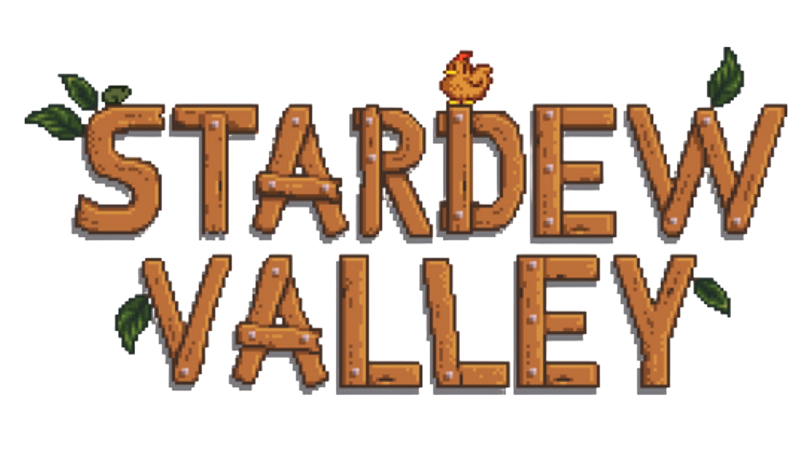

Bem-vindo! Este projeto foi criado com o objetivo de facilitar a vida dos jogadores na hora de completar o objetivo principal de Stardew Valley: o Centro Comunitário.
Use nosso guia interativo para acompanhar o seu progresso e descobrir onde encontrar cada item!